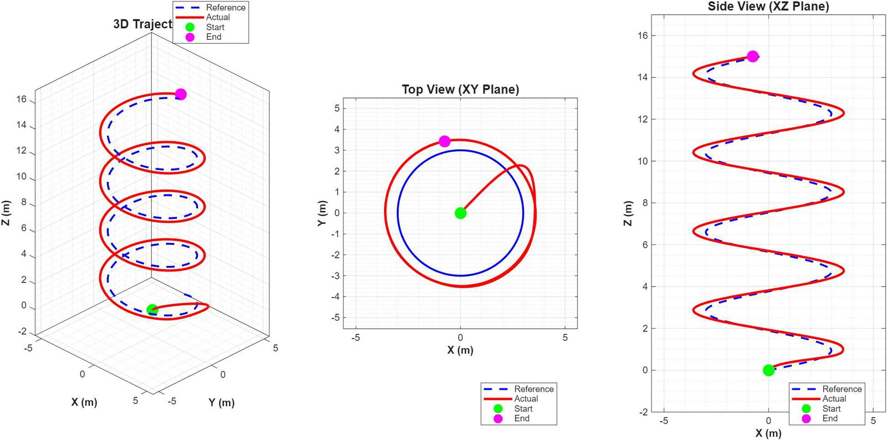
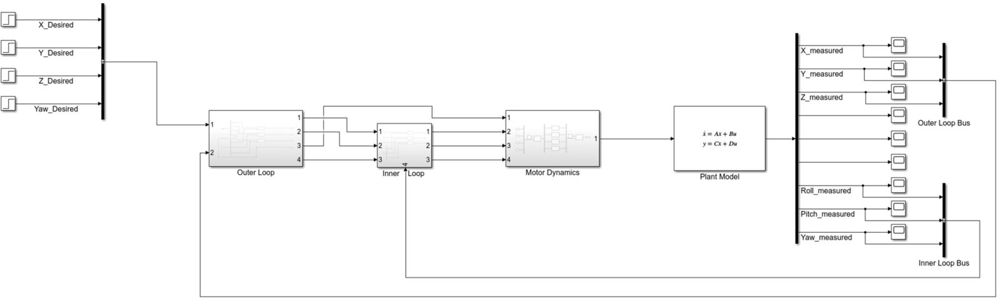
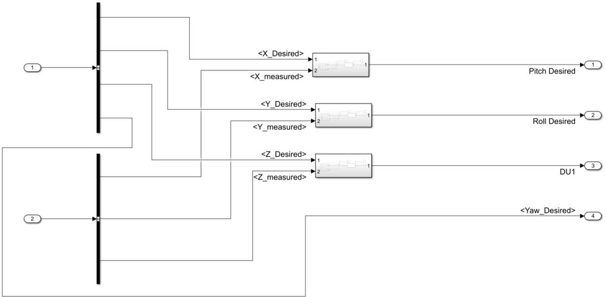
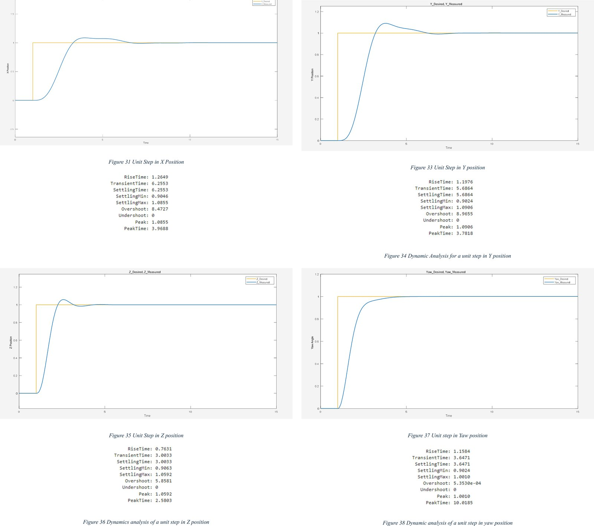
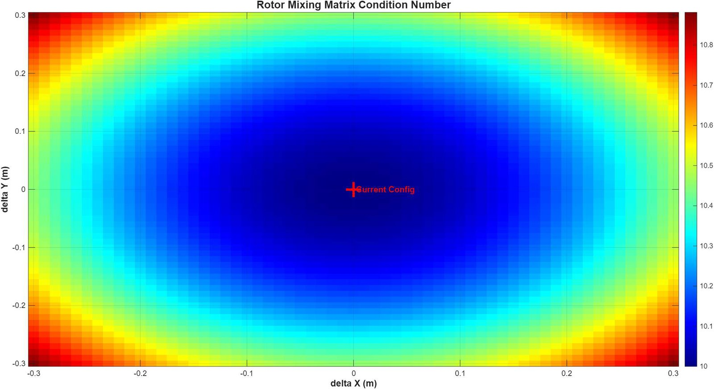

MENG 3705 System Dynamics · Fall 2025
Quadcopter modeling and control
We modeled a quadcopter from first principles, showed that without control it is unstable, then designed a controller that flies it along a 3D spiral.

The model
A 1.2 kg quadcopter with 0.23 m arms. We derived its nonlinear equations of motion with Newtonian mechanics (thrust, drag, and an offset centre of gravity), then linearised them about hover. The state-space model is controllable and observable, and open loop it is unstable, so it can't fly without a controller.
The controller
A cascaded PID: an outer loop turns position errors in X, Y and Z into the roll and pitch angles and thrust needed; an inner loop holds those angles. I added angle and input limits with anti-windup, and the motor dynamics.


Results
Every axis follows a unit step with under 10% overshoot and stays stable:
| Axis | Rise (s) | Settling (s) | Overshoot |
|---|---|---|---|
| X | 1.26 | 6.26 | 8.5% |
| Y | 1.20 | 5.69 | 9.0% |
| Z (altitude) | 0.76 | 3.00 | 5.9% |
| Yaw | 1.16 | 3.65 | ~0% |
| Pitch | 0.68 | 2.85 | 7.4% |
| Roll | 0.77 | 3.23 | ~0% |
Steps in X, Y and Z at the same time behave almost exactly like separate ones, so the axes are well decoupled. On the spiral it drifts wide on the first loop, then tracks the reference closely.

What if the centre of gravity moves?
We swept the centre of gravity ±0.3 m in X and Y: 61 × 61 = 3,721 cases. The matrix that splits commands between the four rotors stayed well-conditioned in every one (condition number about 10 to 10.8, none ill-conditioned). Performance does get worse at large offsets, and at the extremes the drone goes partly unstable. The gains were tuned by hand, so there is room to optimise them.

My role
Project coordinator for the team of five. I updated the mathematical model and built the MATLAB and Simulink simulation.